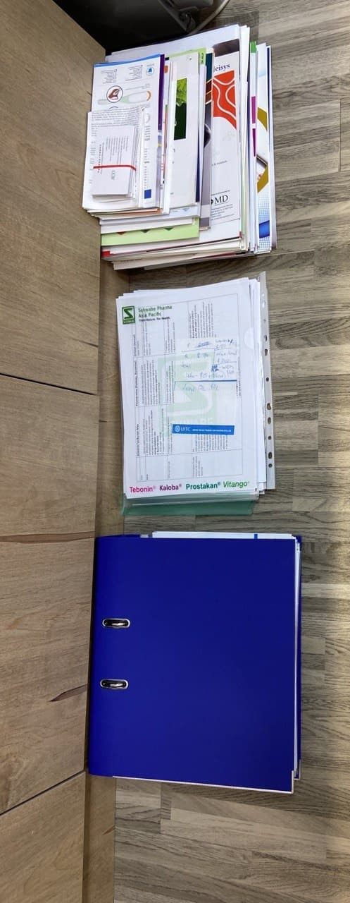
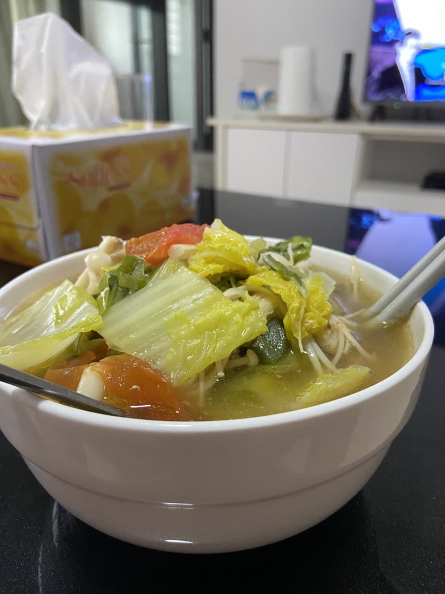

I was on a blue-shift today. Nothing fancy, just sending out emails, answering phone calls and replying to a never-ending barrage of whatsapp messages.
I really appreciate the freedom to have lunch whenever I feel like it! I run out of yoghurt today, so I added in some tofu skin to top up the proteins. Tofu skins have so much more proteins than yoghurt ... I got almost 20g of proteins from the tofu skins alone. A cup of yoghurt gives only 4g of proteins?? I thought that yohurts are supposed to be protein-y
Salmon veggies mushrooms soba noodle. Love it.
